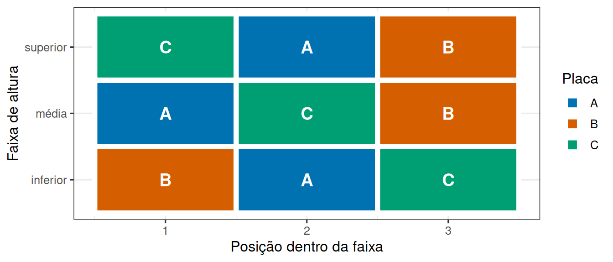
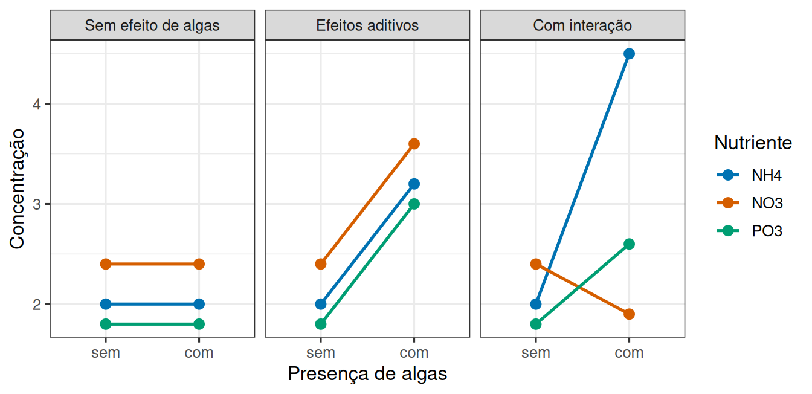

Controlar um gradiente, combinar dois fatores
Leitura prévia
1 Um costão que não é uniforme
Você vai testar três tipos de placa de assentamento em um costão rochoso. O problema é que o costão tem um gradiente evidente, porque perto da linha d’água a superfície fica submersa quase o tempo todo e perto do topo fica exposta ao sol por horas.
Se você instalar as placas do tipo A na faixa inferior, as do tipo B no meio e as do tipo C no topo, o experimento está perdido antes de começar. Qualquer diferença entre as placas pode ser da placa ou da altura no costão, e não há análise capaz de separar as duas coisas depois.
Esse é o problema do confundimento. E existem duas maneiras muito diferentes de lidar com um gradiente conhecido.
2 Duas maneiras de lidar com um gradiente conhecido
2.1 Aleatorizar
Sortear a posição de cada placa espalha o gradiente entre os tratamentos. Nenhum tipo de placa fica sistematicamente mais alto que os outros, e o confundimento desaparece.
Mas o gradiente continua ali. Ele passa a entrar na variação residual, aquela que serve de régua para julgar o efeito do tratamento. Com um gradiente forte, o resíduo fica grande e o efeito das placas fica difícil de enxergar, mesmo existindo.
2.2 Formar blocos
A alternativa é reconhecer o gradiente e usá-lo a favor do experimento.
Divida o costão em três faixas de altura. Dentro de cada faixa, instale uma placa de cada tipo, sorteando as posições. Cada faixa é um bloco, ou seja, um conjunto de unidades parecidas entre si, onde todos os tratamentos aparecem, como mostra a Figura 1.
Repare que cada faixa da Figura 1 contém os três tipos de placa, em ordem diferente. O que muda na análise é o destino da variação devida à altura. Em vez de ficar no resíduo, ela é atribuída ao bloco e retirada dali. O resíduo passa a conter apenas o que sobra depois de descontar tratamento e bloco, e fica menor.
O ganho é real, porque o mesmo efeito de tratamento se torna mais fácil de detectar, sem coletar um dado a mais.
Dessa diferença de papéis decorre uma exigência prática. Como o bloco organiza a alocação dos tratamentos, ele precisa ser definido no planejamento, antes de sortear as placas. Agrupar unidades depois de ver os dados, buscando faixas que tornem o resultado mais nítido, não é controle local, e sim seleção de resultado, o que invalida a interpretação do teste.
2.3 O modelo de blocos completos
O que a Figura 1 mostra pode ser escrito como modelo. Com \(t\) tratamentos e \(b\) blocos, uma observação do tratamento \(i\) no bloco \(j\) é
\[ Y_{ij}=\mu+\tau_i+\beta_j+\varepsilon_{ij}. \]
\(\tau_i\) representa o tratamento, \(\beta_j\) representa a diferença sistemática do bloco e \(\varepsilon_{ij}\) é o que resta. O termo \(\beta_j\) é exatamente a parte da variação que, sem bloqueamento, estaria dentro de \(\varepsilon_{ij}\). Em um delineamento em blocos completos aleatorizados, todos os tratamentos aparecem uma vez em cada bloco e são sorteados dentro dele.
A variação total se divide então em tratamento, bloco e resíduo. Os graus de liberdade são \(t-1\) para tratamentos, \(b-1\) para blocos e \((t-1)(b-1)\) para o resíduo, totalizando \(tb-1\). Com uma observação por combinação, tratamento e bloco não podem ter interação estimada separadamente, e essa variação fica no resíduo. Se uma interação entre tratamento e bloco for cientificamente esperada, é necessário replicar as combinações ou escolher outro desenho.
O bloqueamento ganha precisão quando a variação entre blocos é grande e unidades do mesmo bloco são parecidas. Se os blocos quase não diferem, o ganho é pequeno e alguns graus de liberdade foram usados sem reduzir muito o resíduo. Isso não introduz viés quando o desenho e o modelo estão corretos, mas mostra por que o critério de bloqueamento precisa de justificativa prévia.
2.4 Um exemplo completo de blocos
Considere quatro faixas do costão e três tipos de placa. Cada linha da tabela analítica é uma placa, e cada bloco contém os três tratamentos. As médias mudam com a altura, mas a comparação entre placas é feita dentro de cada faixa. Na fórmula do modelo, o sinal + indica exatamente isso, ou seja, placa e bloco entram como efeitos que se somam.
Ver dados, modelo e tabela ANOVA em blocos
experimento_blocos <- crossing(
bloco = factor(c("muito baixo", "baixo", "alto", "muito alto"),
levels = c("muito baixo", "baixo", "alto", "muito alto")),
placa = factor(c("A", "B", "C"))
) |>
mutate(
efeito_bloco = rep(c(2.0, 1.2, 0.2, -0.8), each = 3),
efeito_placa = recode(placa, A = 0, B = 0.7, C = 1.3),
recrutamento = 8 + efeito_bloco + efeito_placa + rnorm(n(), 0, 0.35)
)
modelo_blocos <- aov(recrutamento ~ placa + bloco, data = experimento_blocos)
knitr::kable(
as.data.frame(anova(modelo_blocos)) |>
rownames_to_column("fonte"),
digits = 3
)| fonte | Df | Sum Sq | Mean Sq | F value | Pr(>F) |
|---|---|---|---|---|---|
| placa | 2 | 4.580 | 2.290 | 13.847 | 0.006 |
| bloco | 3 | 14.558 | 4.853 | 29.340 | 0.001 |
| Residuals | 6 | 0.992 | 0.165 | NA | NA |
O modelo usa \(t-1=2\) graus de liberdade para placa, \(b-1=3\) para bloco e \((t-1)(b-1)=6\) para o resíduo, como previsto. Se ignorássemos o bloco, a diferença sistemática entre alturas seria misturada ao resíduo e a linha correspondente da tabela desapareceria, engordando a soma de quadrados residual. Incluí-lo não muda as comparações observadas dentro de cada faixa, e sim a estimativa do ruído contra a qual elas são avaliadas.
3 Quando há dois fatores de interesse
O segundo problema é diferente. Agora você não tem um fator e um incômodo, mas dois fatores que interessam de verdade.
Suponha um experimento em mesocosmos onde interessam a presença de algas (com ou sem) e o tipo de nutriente adicionado (três tipos). Uma opção seria fazer dois experimentos separados. Combinar os dois fatores em um só experimento é melhor por dois motivos.
O primeiro é econômico, porque as mesmas unidades servem às duas perguntas. O segundo é conceitual, e é o que realmente importa, porque só o experimento combinado permite descobrir se o efeito de um fator depende do outro.
Com 2 níveis de algas e 3 de nutriente, há \(2 \times 3 = 6\) combinações. Um delineamento fatorial aloca unidades experimentais a todas elas.
4 Efeitos principais e interação
Um experimento fatorial admite três desfechos qualitativamente distintos, e a maneira mais direta de reconhecê-los é representar as médias de cada combinação em um gráfico de linhas, como na Figura 2.

No primeiro painel da Figura 2, adicionar algas não muda nada, e as linhas são horizontais.
No segundo, adicionar algas eleva a resposta na mesma medida para os três nutrientes. As linhas são paralelas. Nesse caso os dois fatores agem de forma independente, e faz sentido resumir cada um por um efeito principal, como em “algas aumentam a concentração em 1,2 unidade, seja qual for o nutriente”.
No terceiro, as linhas se cruzam. Com NH4, adicionar algas aumenta muito a concentração, enquanto com NO3 ela diminui. Existe interação, isto é, o efeito de um fator depende do nível do outro.
4.1 O modelo fatorial e sua partição
Os três cenários da Figura 2 correspondem a valores diferentes de um mesmo termo do modelo. Para fatores \(A\) e \(B\), com observação \(k\) na combinação dos níveis \(i\) e \(j\),
\[ Y_{ijk}=\mu+\alpha_i+\beta_j+(\alpha\beta)_{ij}+\varepsilon_{ijk}. \]
\(\alpha_i\) e \(\beta_j\) são efeitos principais, enquanto \((\alpha\beta)_{ij}\) é a interação, isto é, o desvio da combinação em relação ao que seria esperado pela simples soma dos dois efeitos. No primeiro painel da Figura 2, \(\alpha_i\) e \((\alpha\beta)_{ij}\) são nulos, no segundo apenas \((\alpha\beta)_{ij}\) é nulo, e no terceiro nenhum dos dois é nulo.
Em um desenho balanceado com \(a\) níveis de \(A\), \(b\) níveis de \(B\) e \(r\) réplicas por combinação, os graus de liberdade são:
- \(a-1\) para \(A\);
- \(b-1\) para \(B\);
- \((a-1)(b-1)\) para a interação;
- \(ab(r-1)\) para o resíduo;
- \(abr-1\) no total.
Replicação em cada célula é o que permite distinguir interação de variação residual. Uma única unidade por combinação produz médias, mas não fornece uma estimativa independente do erro dentro da célula. No R, a diferença em relação ao modelo de blocos está em uma única letra, porque o operador * substitui o +.
Ver um modelo fatorial em R
experimento_fatorial <- expand_grid(
algas = factor(c("sem", "com"), levels = c("sem", "com")),
nutriente = factor(c("NH4", "NO3", "PO3")),
replica = 1:6
) |>
mutate(
resposta = 2 +
if_else(algas == "com", 1.0, 0) +
case_when(nutriente == "NO3" ~ 0.4,
nutriente == "PO3" ~ -0.2,
TRUE ~ 0) +
if_else(algas == "com" & nutriente == "NH4", 1.2, 0) +
rnorm(n(), 0, 0.35)
)
modelo_fatorial <- aov(resposta ~ algas * nutriente, data = experimento_fatorial)
summary(modelo_fatorial) Df Sum Sq Mean Sq F value Pr(>F)
algas 1 19.446 19.446 159.00 1.60e-13 ***
nutriente 2 3.469 1.734 14.18 4.62e-05 ***
algas:nutriente 2 3.150 1.575 12.88 9.18e-05 ***
Residuals 30 3.669 0.122
---
Signif. codes: 0 '***' 0.001 '**' 0.01 '*' 0.05 '.' 0.1 ' ' 1O operador * inclui algas, nutriente e algas:nutriente. Como os dados foram gerados com um acréscimo extra apenas na combinação de algas com NH4, a linha da interação costuma se destacar na tabela. Se a interação permanece no modelo, os efeitos principais devem ser lidos como médias condicionais ou acompanhados pelas combinações. O princípio de hierarquia recomenda não remover os termos principais enquanto a interação que os contém estiver sendo interpretada.
4.2 O que exatamente a interação compara
Vale tornar explícito o que o termo \((\alpha\beta)_{ij}\) mede. Com dois níveis em cada fator, a interação é uma diferença de diferenças. Se \(\mu_{ij}\) é a média na combinação dos níveis \(i\) e \(j\),
\[ I=(\mu_{22}-\mu_{12})-(\mu_{21}-\mu_{11}). \]
O primeiro parêntese é o efeito de \(A\) em um nível de \(B\), e o segundo é o efeito de \(A\) no outro nível. Se esses efeitos são iguais, \(I=0\) e as linhas esperadas são paralelas. A interação não exige que as linhas se cruzem, pois qualquer mudança de inclinação entre os níveis já representa dependência.
Quando a interação é relevante, descrevemos efeitos simples, como o efeito de algas dentro de cada nutriente. Aplicado aos dados simulados acima, esse cálculo produz uma coluna por diferença:
| nutriente | sem | com | efeito_algas |
|---|---|---|---|
| NH4 | 1.88 | 4.17 | 2.30 |
| NO3 | 2.40 | 3.36 | 0.96 |
| PO3 | 1.73 | 2.88 | 1.15 |
A coluna efeito_algas mostra que o acréscimo devido às algas é bem maior em NH4 do que nos demais nutrientes, que é a assinatura numérica da interação. Os efeitos simples devem vir com erros padrão ou intervalos, e a família de comparações precisa ser declarada. A tabela acima mostra a estimativa bruta para tornar a operação visível, enquanto a inferência usa o quadrado médio residual do modelo fatorial.
4.3 Balanceamento, células vazias e ordem dos termos
Toda a partição descrita até aqui pressupõe um desenho balanceado e completo, no qual os efeitos principais e a interação são separados de forma limpa. Com tamanhos diferentes entre células, as médias marginais passam a depender dos pesos atribuídos a elas. Uma célula vazia pode tornar certos efeitos não estimáveis e confundir fator com interação, e nessa situação a ordem dos termos e o tipo de soma de quadrados deixam de ser detalhes de software.
O melhor reparo ocorre no delineamento, preenchendo todas as combinações, mantendo replicação suficiente e registrando perdas. Modelos podem acomodar desequilíbrio moderado, mas não inventam a comparação que uma combinação ausente impossibilitou.
5 Duas estruturas, uma mesma ideia
Bloco e fatorial resolvem problemas diferentes, mas fazem a mesma coisa com a variação dos dados.
No delineamento em blocos, a variação devida ao gradiente deixa de ficar no resíduo e passa a ser atribuída ao bloco. No fatorial, a variação devida ao segundo fator, e à combinação dos dois, deixa de ficar no resíduo e passa a ser atribuída a eles.
Nos dois casos o resíduo encolhe, e o resíduo é a régua com que todo efeito é julgado. Reconhecer uma estrutura que existe no experimento é, quase sempre, a forma mais barata de tornar um efeito detectável. A diferença está no que se faz com o termo acrescentado, já que o efeito de bloco é descontado e não interpretado, enquanto o segundo fator e sua interação são exatamente aquilo que o estudo pretende descrever.
6 Referências
Quinn, Gerry P., e Michael J. Keough. 2002. Experimental Design and Data Analysis for Biologists. Cambridge University Press.